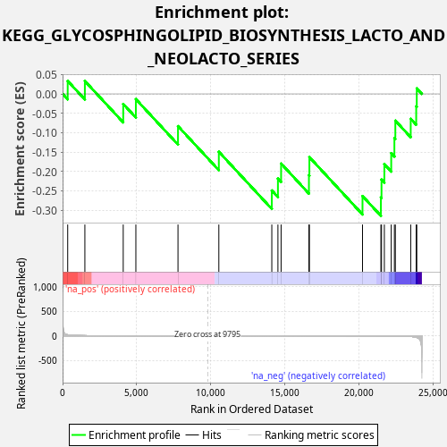
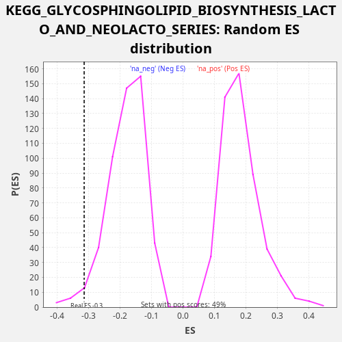

| Dataset | LabCL |
| Phenotype | NoPhenotypeAvailable |
| Upregulated in class | na_neg |
| GeneSet | KEGG_GLYCOSPHINGOLIPID_BIOSYNTHESIS_LACTO_AND_NEOLACTO_SERIES |
| Enrichment Score (ES) | -0.31475398 |
| Normalized Enrichment Score (NES) | -1.7261788 |
| Nominal p-value | 0.02952756 |
| FDR q-value | 0.110271566 |
| FWER p-Value | 0.862 |

| SYMBOL | RANK IN GENE LIST | RANK METRIC SCORE | RUNNING ES | CORE ENRICHMENT | |
|---|---|---|---|---|---|
| 1 | B3GALT2 | 345 | 18.155 | 0.0334 | No |
| 2 | GCNT2 | 1504 | 2.159 | 0.0332 | No |
| 3 | ST3GAL6 | 4092 | 0.218 | -0.0260 | No |
| 4 | B4GAT1 | 4945 | 0.118 | -0.0135 | No |
| 5 | FUT4 | 7787 | 0.010 | -0.0832 | No |
| 6 | B4GALT1 | 10543 | -0.000 | -0.1493 | No |
| 7 | B4GALT4 | 14117 | -0.038 | -0.2492 | No |
| 8 | FUT9 | 14530 | -0.049 | -0.2186 | No |
| 9 | B3GNT2 | 14744 | -0.055 | -0.1798 | No |
| 10 | ST8SIA1 | 16622 | -0.141 | -0.2096 | No |
| 11 | ST3GAL3 | 16652 | -0.143 | -0.1632 | No |
| 12 | FUT1 | 20237 | -0.748 | -0.2636 | No |
| 13 | B4GALT3 | 21478 | -1.514 | -0.2671 | Yes |
| 14 | ST3GAL4 | 21519 | -1.554 | -0.2212 | Yes |
| 15 | B4GALT2 | 21711 | -1.761 | -0.1814 | Yes |
| 16 | ABO | 22174 | -2.542 | -0.1529 | Yes |
| 17 | FUT3 | 22388 | -3.108 | -0.1141 | Yes |
| 18 | B3GNT4 | 22452 | -3.334 | -0.0690 | Yes |
| 19 | B3GNT3 | 23490 | -13.449 | -0.0642 | Yes |
| 20 | B3GALT5 | 23860 | -30.608 | -0.0318 | Yes |
| 21 | B3GNT5 | 23898 | -35.053 | 0.0142 | Yes |

{kind=link}
{kind=link}